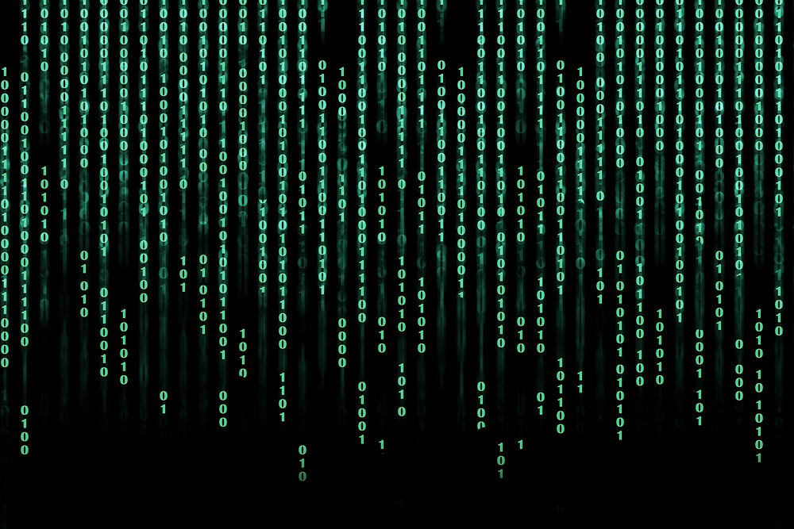

Het binaire stelsel is een stelsel ontwikkeld om te tellen met maar 2 cijfers, namelijk 0 en 1. Deze 0 en 1 heten bits. Met het binaire stelsel kunnen alle getallen worden gemaakt. Een signaal dat wordt verstuurd via het binaire stelsel bestaat uit maximaal 8 bits, deze vormen een byte. De getallen worden steeds met 2 vermenigvuldigd en de code begint rechts met de waarde van 1 en dan wordt er naar links doorgeteld. Een code met 0101 is 0+4+0+1 en staat dus gelijk aan 5. Om hiermee te oefenen, heb ik een spel voor jullie gevonden, binary bonanza. Dit is het spel hieronder.

ASCII is de American Standard Code for Information Interchange. Een ASCII-tabel is een tabel waar karakters, zoals letters en leestekens, worden weergegeven in allemaal verschillende vormen. In totaal worden er 127 verschillende karakters weergegeven in de ASCII-tabelDe karakters staan er decimaal, hexidecimaal,binair en octaal. Een * is een voorbeeld van een symbool van de tabel. * heeft als binaire code 101010.Hiermee wordt een ASCII-tabel dus gelinkt aan het binair stelsel, omdat een karakter ook zo weergegeven wordt. Onderaan de pagina kun je een voorbeeld vinden van een ASCII-tabel.